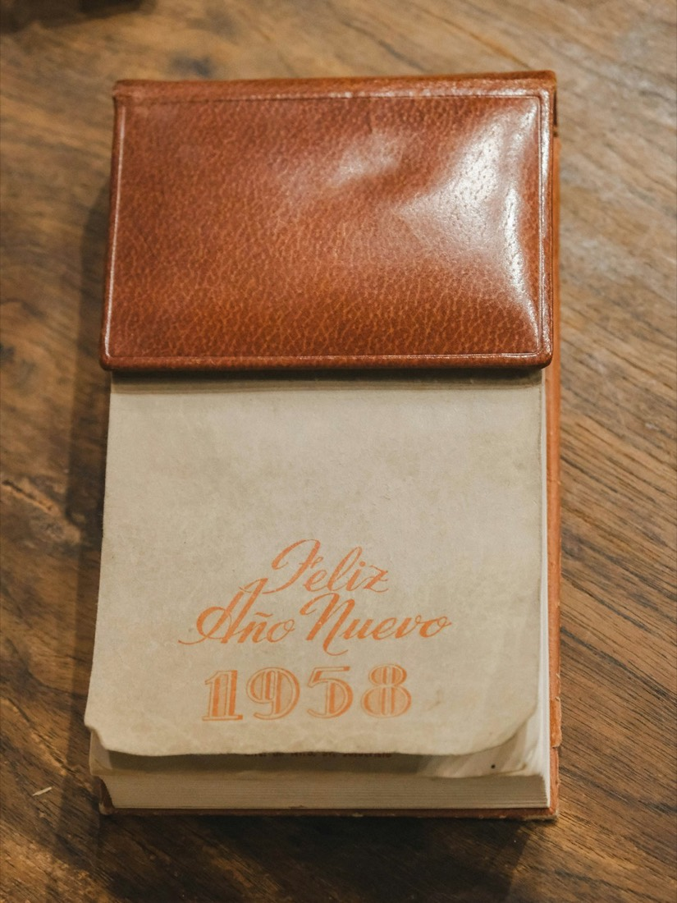
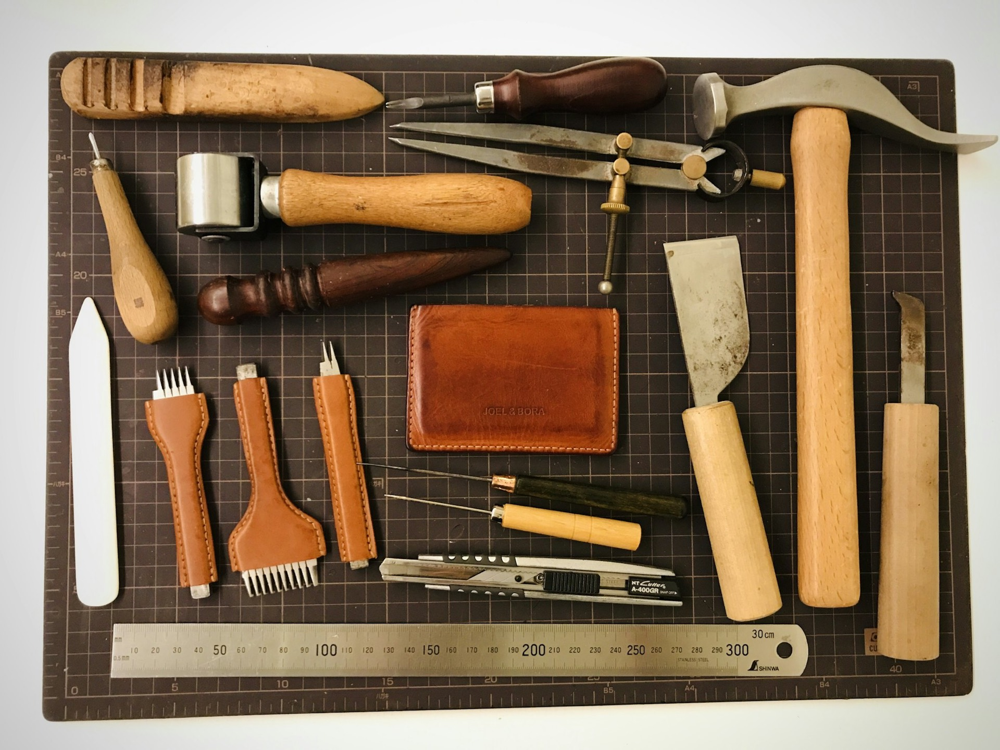
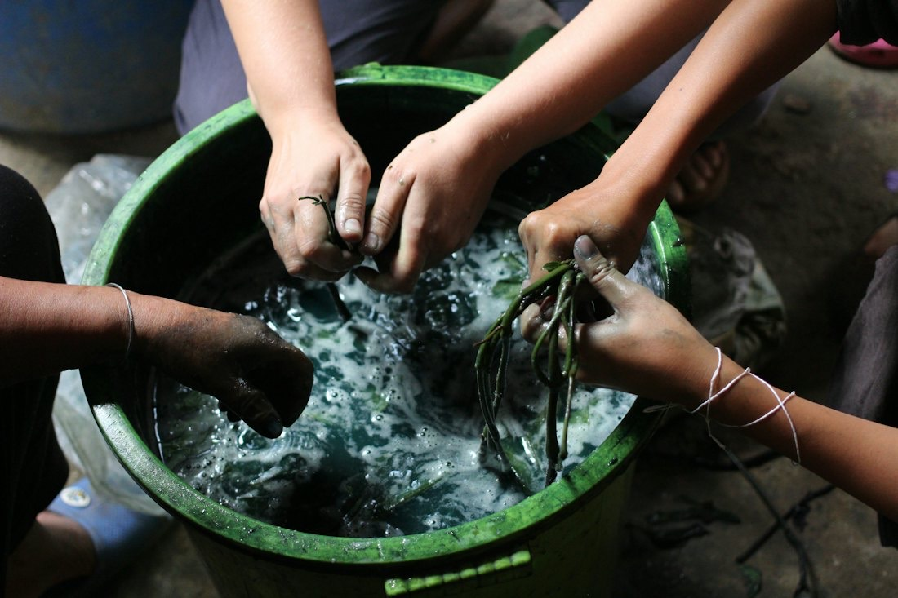
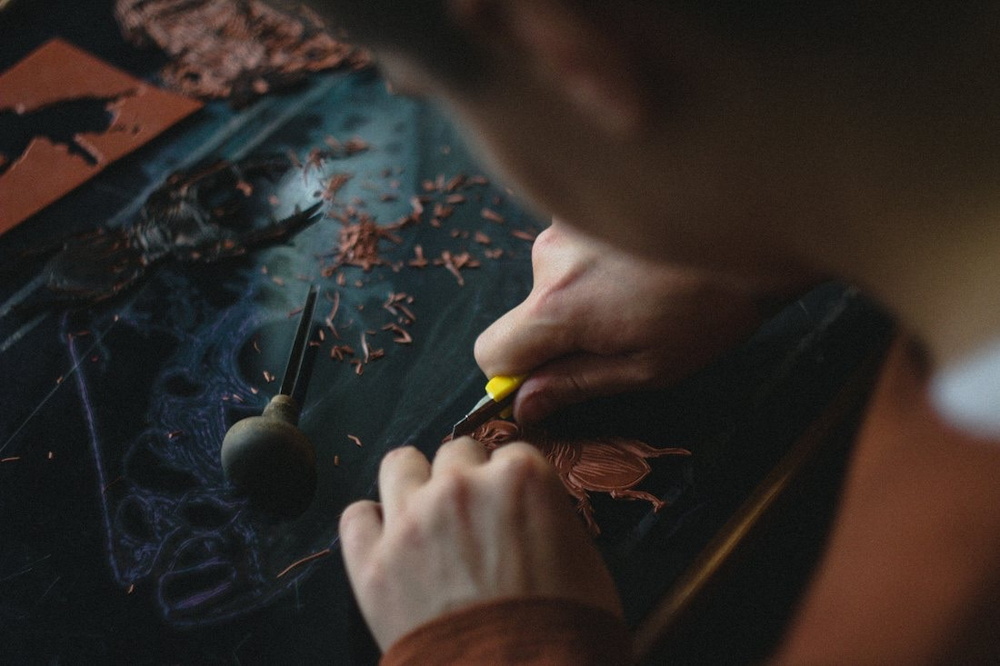
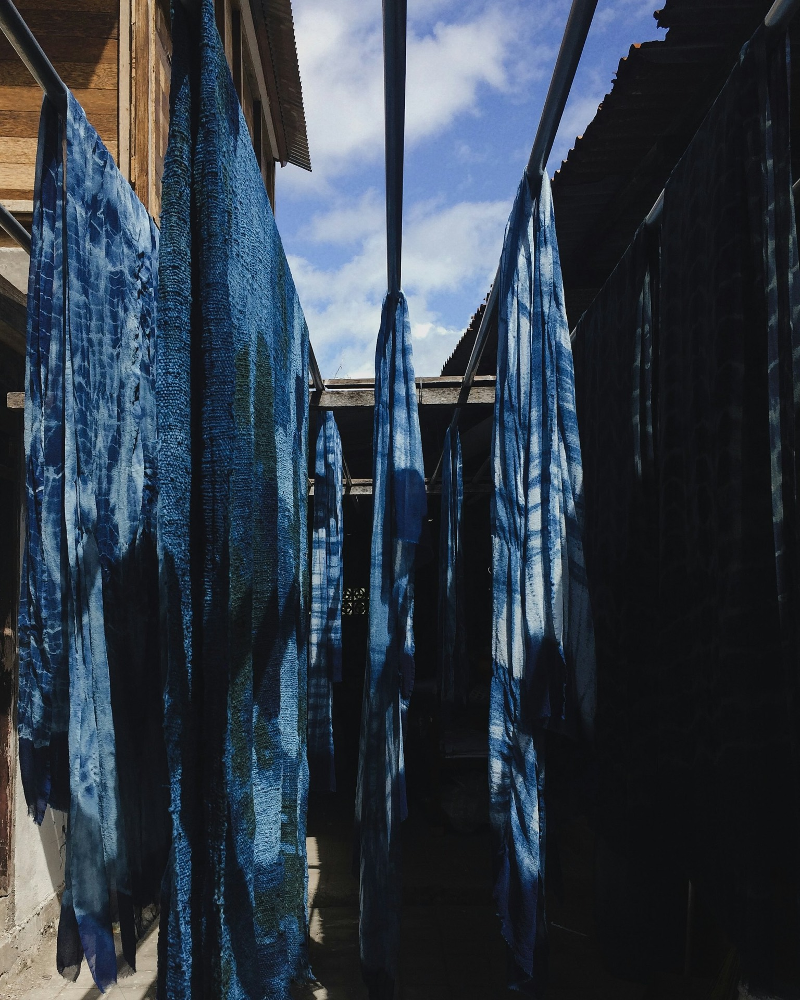

オリジナルの革製品
実用性を重視したバッグ・財布・革小物。オーダーもできます。

創作 染・革工房 新潟市中央区西堀
昭和51年（1976年）創業。オリジナルのバッグや財布、革小物、藍染・墨染の手染め布製品を製作・販売しています。
藍染
白
藍の甕にくぐらせるたび、色が深くなります。
藍染の3Dイメージです。色の名前と色合いは目安です
オリジナル製品の製作・販売、革工芸・染色工芸の材料販売、教室の運営、修理や染め直しまで。『革と染めに関わることなら何でも承る』をコンセプトに、日々手を動かしています。
定期的に全国の百貨店などで、製作の実演販売も行っています。

実用性を重視したバッグ・財布・革小物。オーダーもできます。

手染めの布製品。2階は染色教室になっています。

バッグや財布から革の洋服まで、直せるものはすべて直します。

…
| 営業時間 | 9:30〜17:30 |
|---|---|
| 定休日 | 日曜日・祝日 |
修理・染め直し・オーダーのご相談をお待ちしています。